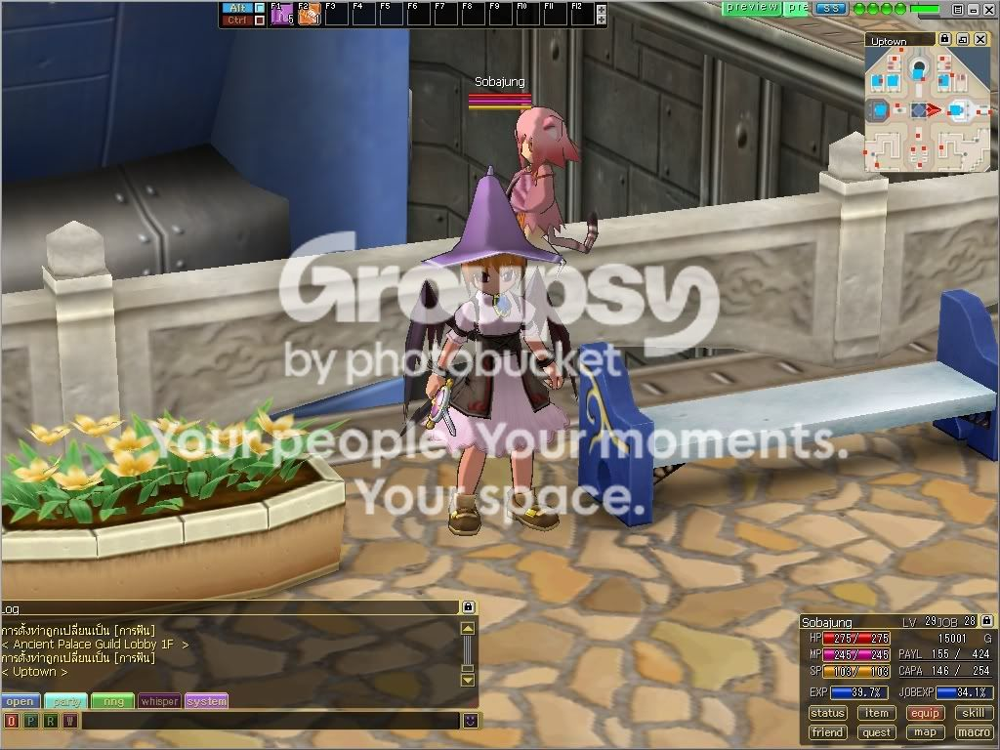

ต่อไวๆน้า
หุหุ
เมื่อไหร่จะได้ออกโรงน้า ตื่นเต้นๆๆ อิอิ
สู้ๆ รออ่านนะ
แล้วที่บอกว่าเกิดอุบัติเหตุน่ะ เปนไรรึป่าว หายไวๆเน้อ
หุหุ
เมื่อไหร่จะได้ออกโรงน้า ตื่นเต้นๆๆ อิอิ
สู้ๆ รออ่านนะ
แล้วที่บอกว่าเกิดอุบัติเหตุน่ะ เปนไรรึป่าว หายไวๆเน้อ
http://eco.froztic.in.th/archive/ecofanclub/
http://eco.froztic.in.th/archive/ecofanclub/viewtopic.php?f=21&t=34586

xiahjunsu เขียน:PClimaTack เขียน:ชื่อของตัวละคร - MarIaNa•MaIDeN
เพศคับ - หญิง
เผ่า (ในใบสมัครไม่มี) - Emil
ลักษณะนิสัย - เป็นคนร่าเริง รักสัตว์เป็นที่สุด ชอบเลี้ยงสัตว์ทุกชนิด โดยเฉพาะเนโกะทุกสี
ลักษณะรูปร่างหน้าตา - เร็วๆ นี้
ที่มาของตัวละคร - ไว้ก่อน นึกไม่ออก-*-
อาชีพของตัวละคร - Farmer
เลเวลปัจจุบัน - 10/10 (จริงๆ ยังไม่เปิดตัวเลย-*-)
อาวุธที่ใช้ - ฆ้อนไม้
สกิล - นึกไม่ออก-*-
สัตว์เลี้ยง - Wan Wan
และสุดท้ายบทที่ต้องการ - หนึ่งในผู้กล้าจ้า
ฝากตัวด้วยน้า :P
คับรับแว้วน้า
เอ่อเวล 10/10 นี่
เพิ่งสร้างตัวใหม่หรอคับ
อยู่ทาโกะปะคับ
วันเสาร์นี้ 3 โมง
มีเรื่องให้ช่วยอย่างแรง
Prof.Peary เขียน:Ne โหดมากตอนนี้ ชอบตอน Oh My God! 555+
ป.ล.ลิงค์ที่ลิงค์ไปที่ ภาพของนายในเรื่องน่ะ มันไม่ตรงกับลิงค์อ่ะ แก้ด้วยๆ
xiahjunsu เขียน:Prof.Peary เขียน:Ne โหดมากตอนนี้ ชอบตอน Oh My God! 555+
ป.ล.ลิงค์ที่ลิงค์ไปที่ ภาพของนายในเรื่องน่ะ มันไม่ตรงกับลิงค์อ่ะ แก้ด้วยๆ
ภาพไหนคับ
Fluteจัง เขียน:รับซาหมัก(สุทรเวช เฮ้ยย)ตัวละครอีกไหมคะ
มาช้าไป อิอิ อยากมีส่วนร่วมด้วยง่ะ
สำหรับตัวละครใหม่ผมจะพยายามป้อนบทให้ทุกๆคนออกมาเที่ยวเล่นใน ฟิค เรื่องนี้ให้เร็วที่สุดนะคับ อดใจรอกันหน่อยล่ะคับ
Fluteจัง เขียน:ขอด้วยนะ งิงิ ^^
ชื่อ : Arina
เพศ : หญิง
เผ่าพันธุ์ : Titania
อาชีพ : Druid
Level : 63/30 ปัจจุบัน
นิสัย : ห่วงพ้องเพื่อน พี่น้อง ไม่ชอบให้มีใครมาว่า ทำอะไรมักไม่คิด
ออกเเนวห้าวๆ เพราะต้องการปกปิดความอ่อนเเอของตนใว้
มีเรื่องสะเทือนใจในวัยเด็ก คือคุณพ่อเสีย เลยไม่ค่อยจะร่าเริงสักเท่าไหร่นัก
ลักษณะ : น้ำหนัก45 สูง160 เลือด เอบี
สิงที่ชอบ : เสียงเพลงของวงซิมโฟนี่ หมายเลข 9
ความสามารถ : สามารถบรรเลงเพลงเเห่งความสุขเเละความสิ้นหวังได้
เป็นผู้ขับกล่อมบทเพลงของเทพเจ้า
อาวุด : พิณคริสตัล ฟลุตเเห่งเเสง
ประวัติส่วนตัว : เป็นลูกสาวคนโตของเเม่ทัพเเห่ง นอร์ท อโครเนีย ฟิลด์
เกิดมาพร้อมกับเสียงดนตรีเเพละพิณคริสตัลที่พระเจ้าประทานให้มา
มีความสามารถดังข้างต้นที่กล่าวเอาใว้ เมื่อยังเด็ก ได้เเหกกฏธรรมชาติ
โดยการชุบชีวิตพ่อขึ้นมา เเต่ผลที่ได้รับกลับเเย่กว่าเดิม
นอกจากจะไม่ได้พ่อคืนมาเเล้ว เธอก็ยัง เสียดวงตาข้างหนึ่งไปอีกด้วย
โดยที่เเม่ของเธอ ซึ่งเป็นพระ ผ่าตัดดวงตาให้เธอใหม่
โดยนำดวงตาเเห่งเเสง ซึ่งเป็นสีเขียว มาใส่ให้เธอ
โดยที่หารู้ไม่ว่า นั่น จะทำให้เธอสามารถใช้เวทย์มนตร์เเห่งพระเจ้าได้
สัตว์เลี้ยง : - หมาป่าสีทอง(เเต่ไม่ค่อยเอาออกมาใช้)
บทที่ต้องการ - เเล้วเเต่จะกรุณาเจ้าค่ะ
รูปนะจ๊ะ
พิจารณาด้วยนะคะ